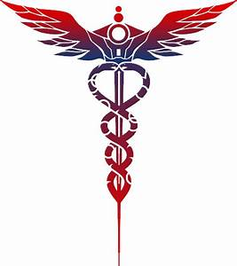
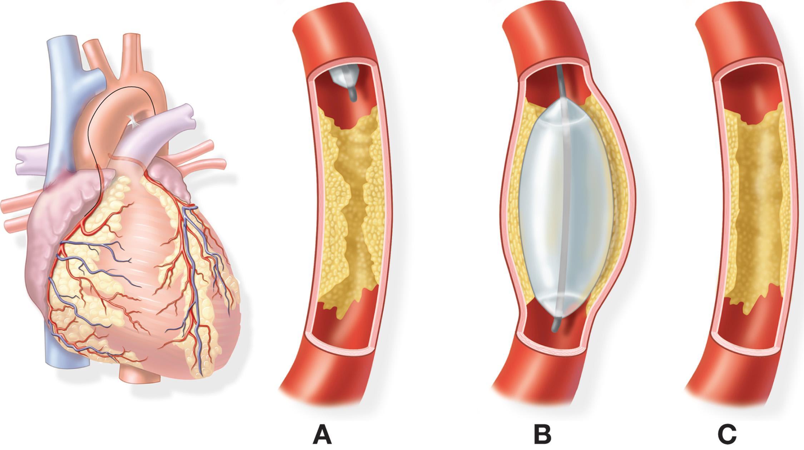

CARDIO CARE
Specialists In :
HEART
TRANSPLANT
Removes a diseased heart and replaces it with a healthy human heart when a heart is irreversibly damaged. Uses hearts from organ donation.
BALLOON
ANGIOPLASTY
A specially designed catheter with a tiny balloon is carefully guided through the artery to the blockage, then inflated to widen the opening and increase blood flow to the heart. A stent is often placed during the procedure, to keep the artery open after the balloon is deflated and removed.
